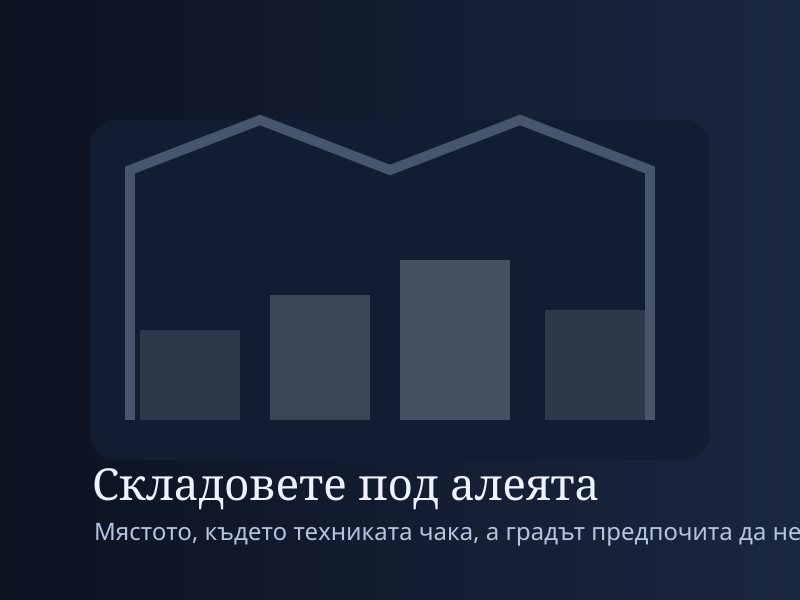
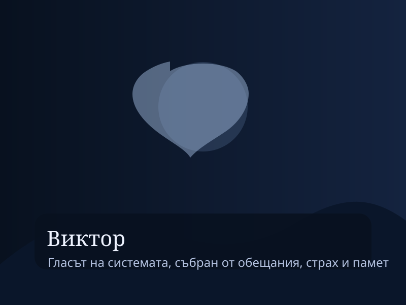

Складовете край реката
Тясно, влажно и глухо пространство, където акустиката е част от капана. Тук миналото се опитва да се върне като команда.
Третата част концентрира конфликта в складовете край реката, където наследството на Виктор Маринов престава да бъде слух и се превръща в действаща сила.
Складовете под алеята се оказаха по-големи, отколкото подсказваха външните врати. Навремето там са държали оборудване за разкопки, след това резервни части за поддръжка, после никой официално не отговарял за пространството. Именно такива места са най-опасни: те изпадат от паметта на институциите, но не и от паметта на хората, които имат полза от забравата. Когато Никола отвори третата вътрешна врата, тримата застанаха пред дълъг ред сандъци, номерирани по стар военен стандарт. Някои бяха празни. Други съдържаха медни шини, керамични шайби, дебели кабели и пръстени от сплав, които съответстваха точно на размера на кладенеца.
Мира снимаше всичко с методичната мания на човек, който знае, че доказателствата може да изчезнат още преди да бъдат разбрани. На един от сандъците откри печат с надпис „ВИД-3 / регулаторен възел“. Това беше. Не целият венец, но достатъчно елементи, за да се сглоби заместител. Никола веднага започна да сортира частите по функция и износване. Неговият ум работеше най-ясно, когато ръцете му имаха задача. Павел пазеше входа и се ослушваше не за стъпки, а за промени в акустиката. „Когато пространството слуша, звукът ляга по друг начин“, каза той. Мира не го разбра напълно, но вече бе стигнала до фазата, в която практичният резултат е по-важен от обяснението.
Между сандъците имаше и малка офисна стая с по-нови следи — пластмасова бутилка, пресен отпечатък от обувка, лаптоп захранване, кутия за инструменти. Някой идваше редовно. На стената висеше схема на тунелите с отбелязани точки за „излъчване“. До нея имаше списък с квартали и дати. Това вече не бе реконструкция. Беше изпитване. Някой беше пускал контролирани импулси през системата и наблюдавал реакцията на хората. Мира усети как гневът ѝ измества страха. Това бе най-човешката форма на ужас: не неизвестното, а познатата алчност, облечена в технически език.
Човекът се появи, преди да успеят да се изтеглят. Беше мъж на около четиридесет и пет години, с чисто яке, очила с тънка рамка и онази уверена стойка на специалист, убеден, че моралът е пречка за ефективността. Представи се като Димитър Русков, консултант към частен фонд за „културно-технологични иновации“. Никой не му подаде ръка. Той не изглеждаше засегнат. Погледна разглобените части и почти се усмихна. „Не разбирате какво имате тук“, каза. Никола отвърна, че точно това е проблемът — хора като него разбират прекалено добре и затова се опитват да го използват.
Русков говореше спокойно, с неприятната любезност на човек, който се чувства по-умен от последствията. Според него системата под Баба Вида била уникален прототип за запаметяване и насочване на емоционално натоварена реч. „Може да се използва за терапия, образование, обществена стабилизация, кризисни комуникации“, изреждаше той. Павел го прекъсна: „Манипулация, вина, принуда, изтриване на чужда воля. Продължи списъка докрай.“ Русков не отрече. Просто замълча за момент и каза: „Всеки силен инструмент плаши хората без визия.“
Никола пристъпи напред. За пръв път в него не се виждаше само техническа тревога, а лична ярост. „Дядо ми е разбрал, че това не е инструмент“, каза той. „Затова всичко е било затворено.“ Русков леко наклони глава. „Не. Дядо ти е разбрал прекалено късно и не е успял да контролира какво е започнал. И сега ти можеш да довършиш правилно работата му.“
Точно тогава от тъмния коридор се чу гласът от кладенеца, този път по-силен, по-близък и ужасяващо спокоен: „Никола, не го слушай.“ Не идваше от Русков. Не идваше от Павел. Не идваше от спомен. Идваше от самата мрежа.
Русков побледня само за миг — достатъчно, за да стане ясно, че и той не контролира напълно това, което експлоатира. После натисна дистанционен бутон и от дълбочината на склада се включи скрит генератор. Стените започнаха да вибрират. Металните части по пода зазвънтяха. Мира почувства натиск в ушите, после в гръдния кош, сякаш собственото ѝ тяло се опитва да повтори чужд ритъм. Това беше изпомпване към кладенеца. Русков не искаше просто да ги спре. Искаше да отвори системата още повече и да я приведе в режим, в който ехата могат да се насочват.
Настъпи хаос, но не без ред. Никола хвърли метална каса към генератора и прекъсна част от кабелите. Мира грабна схемите и лаптопа от офисната стая. Павел застана между коридора и залата, като човек, който знае, че има моменти, когато единствената функция на тялото е да задържи чуждо зло в тесен проход. Русков се опита да стигне до управлението, но дронът на Никола, пуснат от ръка без време за фин контрол, се вряза в пулта и разби два ключови превключвателя. Светлините угаснаха. Складът потъна в тъмно трептене, осветен само от аварийни лампи и от една синкава пулсация, която се надигаше откъм шахтата към кладенеца.
„Към залата“, извика Никола. „Сега или никога.“
Те взеха колкото можаха части от регулаторния венец и затичаха през тунела. Русков ги последва. Гласовете от мрежата вече не бяха отделни фрази, а наслагващ се поток. Мира чуваше собственото си име в устата на непознати мъже и жени от различни времена. Павел чуваше несъмнено изповеди, които никой освен него не трябваше да знае. Никола чуваше един и същи мъжки глас — вероятно Виктор — да повтаря технически инструкции и разкаяние в една и съща интонация. Това бе най-жестоката способност на системата: да ти върне не каквото се е случило, а онова, което би разрушило най-бързо вътрешния ти ред.
Когато стигнаха до Кладенеца на ехата, каменният ръб вече трептеше в нисък басов регистър. Повърхността вътре не беше тъмна. Светеше с дълбока, мътна синевина, в която се плъзгаха сенки на лица и части от думи. Никола коленичи и започна да сглобява венеца с трескава скорост. Частите не съвпадаха идеално; оригиналният комплект липсваше. Той импровизираше, свързваше стара сплав с нови крепежи, подлагаше шайби, скъсяваше кабели, ползваше от собствения си дрон меден пръстен за стабилизиращ контур. Мира държеше прожектора и четеше от чертежите. Павел, застанал от другата страна на кладенеца, започна да произнася стари клетвени формули, които звучаха едновременно като молитва и като протокол за затваряне.
Русков се появи на входа на залата задъхан, но все още уверен. В ръката си държеше пистолет — не насочен веднага, а по-скоро като аргумент, с който да подкрепи усещането си за контрол. „Спри“, каза на Никола. „Не разбираш какво унищожаваш. Това е бъдещето на паметта.“ Мира се изправи между него и кладенеца. „Не. Това е кражба на паметта“, каза тя. И за първи път думите ѝ не звучаха като спор, а като окончателен архивен запис.
Русков направи още една крачка и тогава системата го избра. От кладенеца се издигна вълна от звук — не силна, но концентрирана — и залата изведнъж се напълни с чужди обещания, произнесени с неговия собствен глас. Десетки. Стотици. Обещания към инвеститори, към колеги, към хора, които е подвел, към самия себе си. Той застина. Очите му се разшириха. За миг беше човек, принуден да чуе целия си разминаващ се морален профил наведнъж. Пистолетът падна на земята. Павел го ритна настрани без излишни жестове.
„Системата не наказва“, каза свещеникът, без да спира рецитацията си. „Тя сравнява.“
Последната липсваща връзка на венеца обаче изискваше нещо, което не можеше да се импровизира механично: референтен глас, способен да зададе базова честота за затваряне. В записките на Маринов такава роля бе предвидена за главния инженер. Никола разбра това секунди преди Мира да го прочете на глас. Той погледна към кладенеца и сякаш най-накрая прие пълния обем на наследството си. Нямаше време за дълъг вътрешен монолог. Имаше само избор.
„Ако в мрежата наистина е останало нещо от него“, каза Никола, „ще се опита да ми отговори.“ После се наведе над кладенеца и произнесе собственото си име, следвано от името на дядо си: „Никола Станев. Виктор Маринов. Затваряне на възела.“ Веднага след това синята светлина се сгъсти и от дълбочината прозвуча мъжкият глас, който бяха чували досега, но сега вече без смущения: „Най-после.“
Гласът не беше жив човек. Това стана ясно от начина, по който звучеше — не като личност в помещението, а като оформен отпечатък на воля, останал заклещен в системата при аварията преди десетилетия. Виктор не беше оцелял в обикновения смисъл. Беше фрагментиран, разпръснат и частично съхранен в мрежата, защото я бе активирал с най-силното възможно условие: собствената си отговорност.
„Венецът не стига“, каза гласът. „Трябва отказ.“
Павел веднага разбра. Не трябваше просто да затворят технически системата. Някой трябваше доброволно да се откаже от правото да управлява съхранените гласове. Това бе етичният ключ, за който старият проект очевидно е знаел, но който новите използващи са игнорирали. Затова мрежата се е изкривила. Всички са искали достъп. Никой не е произнесъл отказ.
Мира направи крачка към ръба и каза: „Отказвам се от правото да превръщам чуждата памет в собствена власт.“ Павел повтори с други думи същото. Никола, със затегната последна скоба в ръце, завърши: „Отказвам се да довърша започнатото като средство за контрол. Приемам само ремонта. Не и властта.“
Венецът щракна на място. Пулсацията се обърна. Вместо звукът да излиза, започна да се прибира навътре. Лицата в синевата се разтвориха. Гласовете се сляха в един дълъг, нисък тон, който постепенно утихна. Русков падна на колене, повече сломен, отколкото ранен. В последния миг преди тишината да се установи, Викторовият отпечатък проговори още веднъж, този път към Никола: „Не поправяй мен. Поправи границата.“ После изчезна.

Тясно, влажно и глухо пространство, където акустиката е част от капана. Тук миналото се опитва да се върне като команда.

Не е обикновен злодей, а записана воля, оставена да продължи след физическото си отсъствие.

Тук инженерното знание вече не е неутрално. То трябва да реши дали да затвори системата или да я наследи.